Contents
Overview - Details general tileset information.
Variables Overview - Details what each variable in a tileset means/does.
Area Name - Details about the Area Name variable.
Area Label Frame - Details about the Area Label Frame variable.
Area Type - Details about the Area Type variable.
Tile Graphics - Details about the Tile Graphics variable.
Overlay Graphics - Details about the Overlay Graphics variable.
Background Graphics - Details about the Background Graphics variable.
Foreground Graphics - Details about the Foreground Graphics variable.
Palette - Details about the Palette variable.
Music - Details about the Music variable.
Ambience - Details about the Ambience variable.
Music Volume - Details about the Music Volume variable.
Ambience Volume - Details about the Ambience Volume variable.
Stop Previous Music - Details about the Stop Previous Music variable.
NPC - Details about the NPC variable.
Art Alts. - Details about the Art Alts. variable.
Toxic Timer - Details about the Toxic Timer variable.
Cart Intro PNG - Details about the Cart Intro PNG variable.
Cart Intro Palette - Details about the Cart Intro Palette variable.
Overview
Location in the unpacked data: data\tilesets.txt
The tilesets file is one of the most important when modding TEIN, especially in regards to adding new areas/zones. The file dictates general information about a given area, but also defines many of the traits and aspects that will make an area unique (graphical elements, what music to use, palette, etc.).
Here is an example tileset taken from the game, ("The End" downward secret area tileset):
01 1xd { #1 bonus downward areas
02 area_name "The End"
03 area_label_frame 1
04 tile_graphics Tilecity
05 overlay_graphics Overlayscity
06 background_graphics bg2
07 palette 1
08 fx_shader reflectionripples
09
10
11 music [hmk_secret_intro.ogg, hmk_secret_loop.ogg]
12 ambience rain.ogg
13 stop_previous_music false
14
15 music_volume 1
16 ambience_volume 1
17
18 area_type normal
19
20 tile_particle_1 drip
21
22 npc_1 NPCD6
23 npc_2 NPC0
24 npc_3 none
25 }
Whilst this may seem complex, the syntax for a tileset can be broken down and represented as the following:
1 [TILESET_NAME] {
2 [VARIABLE_NAME] [VALUE]
3 ...
4 }
The # followed by text, in The End example, is simply a comment and not interpreted/read by the game itself, hence why it was not added in the simplified syntax breakdown.
So, overall, the "tilesets.txt" file simply stores a series of tilesets that define properties, features, and aspects of the different zones in the game. Allowing for them to make use of different assets, music, NPCs, alternate graphics, particles, etc.
Variables Overview
A brief overview of all the variables a tilset can modify, with links to specific areas for more detail:
area_name - The name that will appear on the save file. It is also used to reference the area in certain instances.
area_label_frame - The title graphic in the game’s SWF that is displayed when the area is entered.
area_type - What sub-type of area is it, defines certain properties of the level (e.g. dark levels use tumors as lives).
tile_graphics - The graphical tileset to use, changes details about the visuals of the area’s layers.
overlay_graphics - The graphics that are displayed on top of the active layer (bricks, rocks, bones, etc.).
background_graphics - The background image to use for the area.
foreground_graphics - The foreground image to use for the area.
midfx_graphics - ???
midfx_layer - ???
fx_shader - The shader to apply certain visual effects in the area.
fx_shader_mid - ???
shader_param - Controls the intensity of the mid_fx layer (from 0 to 1, decimal numbers valid).
palette - The row of the palette.png to use for rendering graphics. (Palette rows start couting from 0, not 1).
music - The music to play whilst in the area.
ambience - The ambient background noise that will be played in the area.
music_volume - The volume the area’s music should be played at.
ambience_volume - The volume the area’s ambience should be played at.
stop_previous_music - A flag stating whether the previous music track should stop or continue playing silently.
tile_particle_1 (to 5) - A particle effect, defined in particles.txt, to assign to the two particle tiles.
global_particle_1 (to ???) - A particle effect, defined in particles.txt, to spawn globally throughout the area.
npc_1 (to 3) - The NPCs, defined in npcs.txt, to assign to the three NPC tiles used in the level.
decoration_1 (to ???) - The decorations to assign to the ??? decoration tiles used in the level.
art_alts - Alternate sprite graphics to use on entities that allow for alts.
toxic_timer - Controls how long toxic clouds and water will take to kill the player in seconds.
cart_intro_png - The filename from the textures\ folder to use as the cartridge area’s intro graphic.
cart_intro_palette - The palette to use when rendering the cartridge intro graphic.
Area Name
The area name is a unique identifier for a given area, it is the text that will appear on the save file when a game is saved within the zone, when writing the label frame within the tilesets file, it should be wrapped in double-quotes "Example Name" allowing for spaces. Not doing this may confuse the game and cause problems when reading the area’s tileset.
Whilst it may be assumed that this variable also controls the level name (bottom-right corner in-game), this is in fact incorrect. The individual level names are controlled via the "levelinfo.txt" file, in the "data\" folder of the unpacked game files; for more information on editing level info, click here. The text graphic displayed at the top of the screen when a new zone is entered is also not controlled by this property, see the Area Label Frame section below for more info.
The only other factor controlled by the area name is the slant effect seen in Nevermore/The Future (see image below). By setting an area’s name to "Nevermore" it will be given said slanting effect, but as stated previously, will also result in the, most likely, unwanted side-effect of the save file displaying "Nevermore". The only, currently known, solution to setting the slant effect is by hacking and modifying a plain-text value contained withing the game’s executable located at address 0x00232A18. However, performing the hack and handling the legality of redistributing the executable is more effort than it is worth. Furthermore, the string appears to be of a fixed length, or at the very least only contain a few more bytes that could be overwritten. Meaning assigning a zone like the Wall of Sorrow the slanting effect would be impossible, due to this limitation.

Notice the slight slant down on the left side of the screen, when compared to the right.
Area Label Frame
The area label is the unique graphic that appears on screen whenever a new area is entered. The area label frame variable refers to a specific frame of the area label symbol, located inside the game’s SWF, informing the game which graphic to render--basically acting as an ID for each graphic. Below is a list detailing what frame holds each graphic, and some examples of area labels on the right:
|
00 - No Area Label |
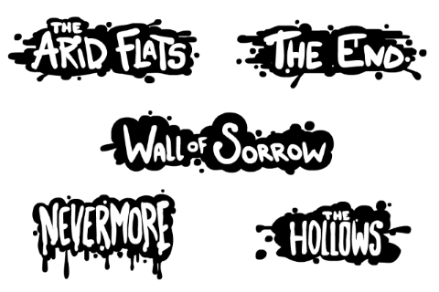
|
Adding new area labels, or modifying existing ones, involves modifying the game’s SWF. For more information on the SWF and modifying it, click here.
Area Type
The area_type variable controls specific aspects of a tileset/area, such as how it will handle deaths, etc. If the area type variable is left undefined, then the area will be of type normal -- the default value. The variable accepts the following values, with each one having a unique effect that will change the way the area acts:
ironcart
The retro monitor filter will be applied, as will retro sounds, and a cart intro graphic (cart_intro_png) will be displayed when entering the area. Dying will send the player back to the first level in the area; if used in an area that was not reached via the TV/Console, then the player will be spawned in the last non-ironcart room they were in. Using the "Exit Cart" option from the menu will take the player back to 1-1.
cart
The retro monitor filter will be applied, as will retro sounds, and a cart intro graphic (cart_intro_png) will be displayed when entering the area. The player will have a limited number of lives to beat the area. Using the "Exit Cart" option from the menu will take the player back to 1-1.
glitch
The retro monitor filter will be applied, as will retro sounds, and a cart intro graphic (cart_intro_png) will be displayed when entering the area. Graphical elements will be reset/randomised on every death. Using the "Exit Cart" option from the menu will take the player back to 1-1.
normal
The standard areas in the game, there are no extra effects or parameters added.
dark
The current tumor count will act as the player’s lives, and losing all lives will respawn the player at the first level in the area.
Tile Graphics
The tile_graphics variable dictates what graphics are used when drawing the environment tiles for the game, these include the solid tiles and the modular background layer pieces. As can be seen in the example images, this could mean changing a damaged building wall in The End tileset, to a natural rocky wall in the Arid Flats tileset, and so on; allowing for each area to have a unique theme and visual flare. As well as the graphics for the environment tiles themselves, the value given to the tile graphics will also control what default decorations an area will use. However, these decorations can be overwritten by assigning new ones using the decoration_1 (to ???) variable. For more information on what these default decorations are, see the Decorations section on this page. If the variable is unset then it will be given the value of Tile, the default value. None is not a valid value for tile graphics, and will result in the game crashing on startup.
Whilst it may be logical to also assume that the tile graphics will impact the small images drawn on top of the tiles (bricks, rocks, etc.), this is in fact not true and is instead controlled by the overlay_graphics variable. Furthermore, graphics such as Water, Lava, and Pollution/Toxic are also controlled via other factors, in this case shaders. For more info on adding shaders to tilesets, clic here.
The specific graphics assigned to each tile within the tileset is determined randomly when the level is loaded, and in the case of TileGlitch graphics, further randomisation to the tiles will occur.
As the tile graphics variable takes in movie clips as its value, this means that any of the available art alts. can be used as tile graphics. For a full list on all the available art alts. see the Art Alts. section.
Examples of the different tile graphics can be seen below.

Tilecity |

Tilefield |
|
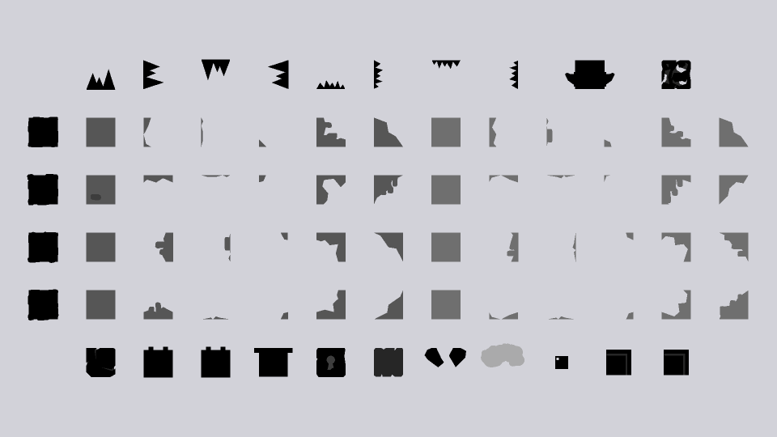
Tilecaves |
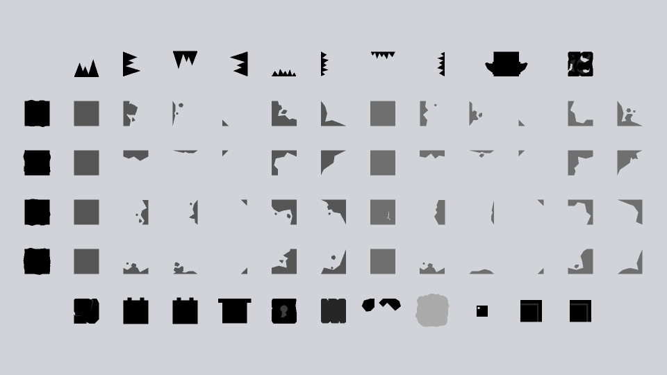
Tiletox |

Tiletox2 |
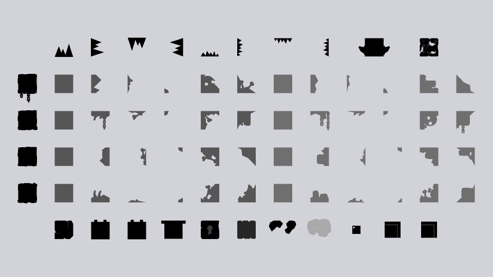
Tilehell |

Tileairship |
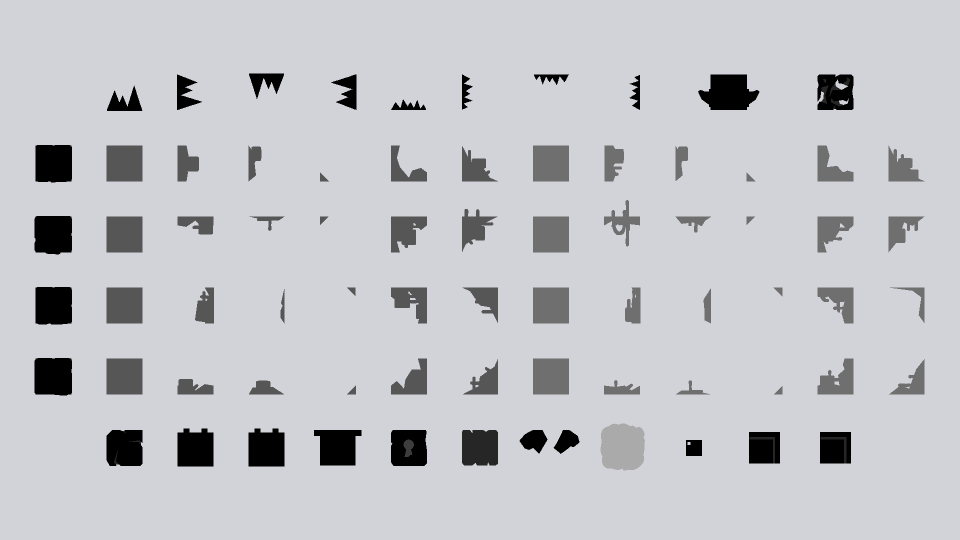
Tilecomplex |

theglow |
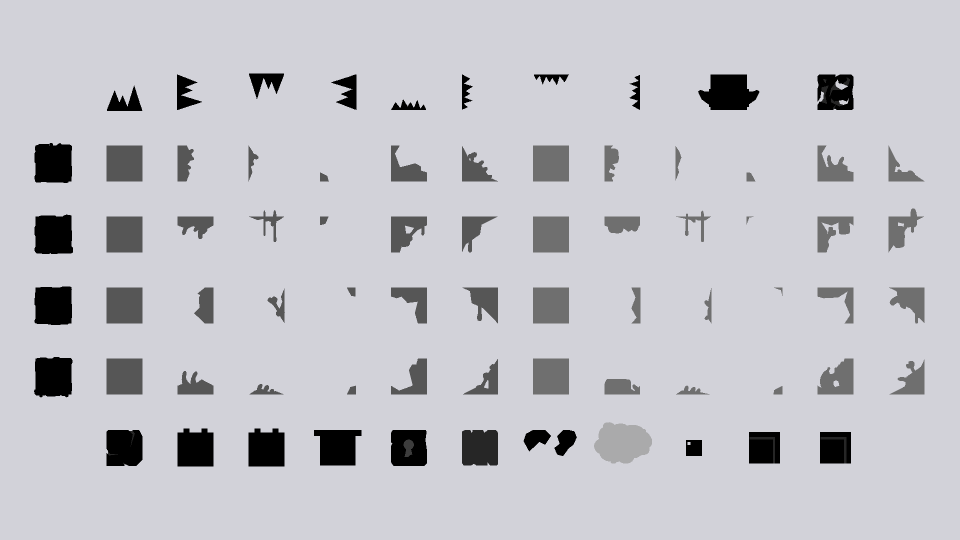
TileEnd |
|
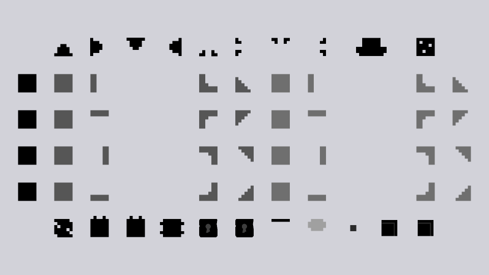
Tileretro |

TileGlitch |

Tilesewers |

Tile |
Overlay Graphics
The overlay_graphics variable dictates what graphics are drawn on top of the active/solid tiles and the first layer of modular background tiles. As can be seen in the example images, this could mean changing a few bricks in The End overlay, to a cluster of rocks in the Arid Flats overlay, and so on; allowing for each area to have a unique theme and visual flare. If the variable is unset then it will be given the value of TileOverlays, the default value. None is also a valid value for overlay graphics, and will result in no overlays being displayed for the area.
The specific graphics overlayed on each tile in the level is determined randomly when the level is loaded, and if TileGlitch is being used as the tile_graphics value, then further randomisation to the tiles and overlays will occur.
As the overlay graphics variable takes in movie clips as its value, this means that any of the available art alts. can be used as overlay graphics. For a full list on all the available art alts. see the Art Alts. section.
Examples of the different overlay graphics can be seen below.

Overlayscity |

Overlaysfield |

Overlayscaves |

Overlaystox |

Overlaystox2 |
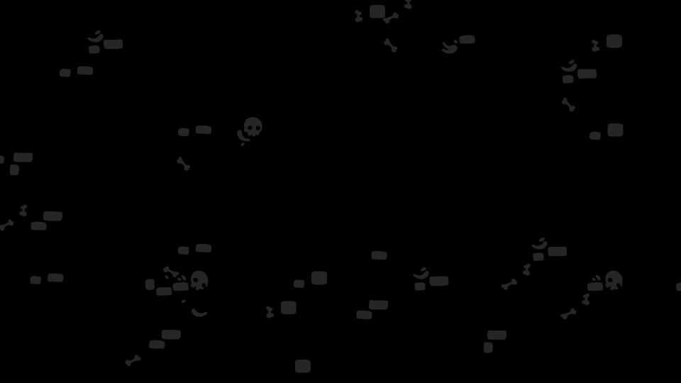
Overlayshell |

Overlaysairship |
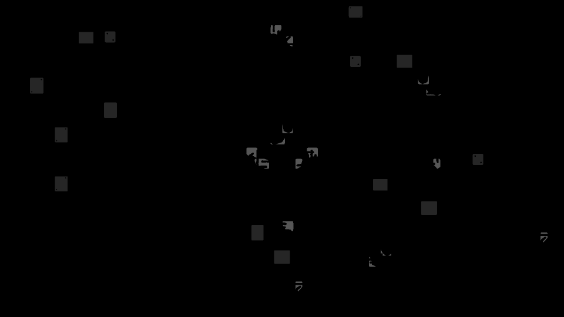
Overlayscomplex |

Overlaystheglow |

Overlaysend |

Overlaysretro |

TileOverlays |
Background Graphics
The background_graphics variable specifies what graphic to display as the background image of a level. If no background_graphics variable is specified then the game will render the background as a solid dark-grey colour; this is the same as if None is used as the background graphics value. Each background has a unique anchor-point, meaning each one will be placed in a level differently, sometimes resulting in the solid grey colour showing through in areas. The N0 tile can be used to offset the background within a level, so that it can be placed where desired.
As the background graphics variable takes in movie clips as its value, this means that any of the available art alts. can be used as a background image. For a full list on all the available art alts. see the Art Alts. section.
Examples of the different background graphics can be seen below.

bg2 |
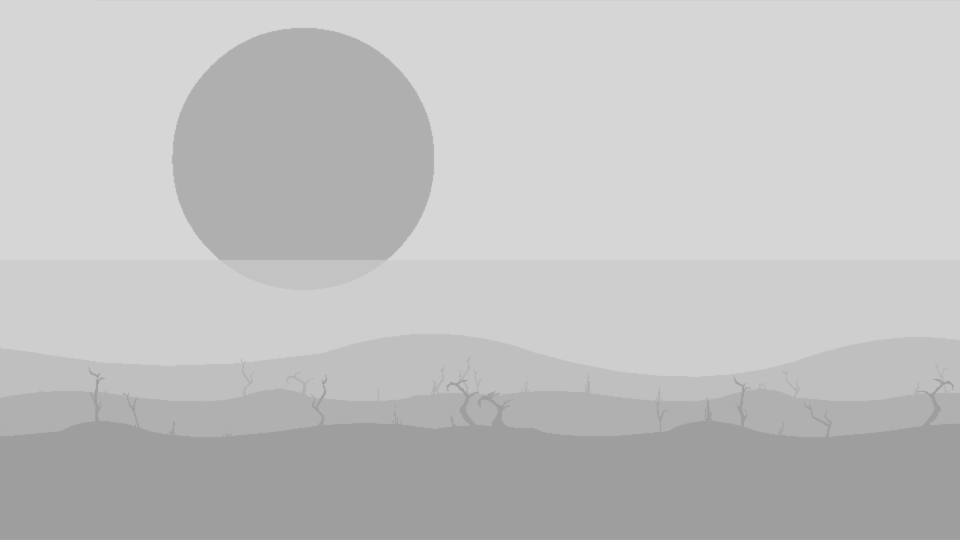
ch2bg |

ch3bg |

ch4abg |

hellbg |

field2bg |

Background |

airshipbg |

bgsolid |

neverbg |

bgretro |

bgretrox |

bgretro2 |

None |
Foreground Graphics
The foreground_graphics variable specifies what graphic to display as the foreground image of a level. If no foreground_graphics variable is specified then the game will not render anything as the foreground; this is the same as if None is used as the foreground graphics value. Each foreground has a unique anchor-point, meaning each one will be placed in a level differently. The N1 tile can be used to offset the foreground within a level, so that it can be placed where desired.
As the foreground graphics variable takes in movie clips as its value, this means that any of the available art alts. can be used as a foreground image. For a full list on all the available art alts. see the Art Alts. section.
Examples of the different foreground graphics can be seen below.
|
fg1 |
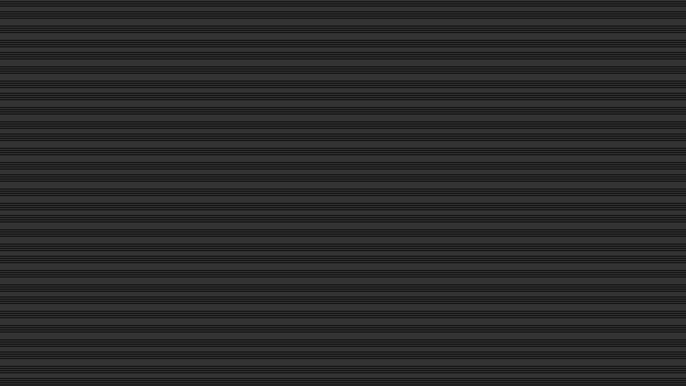
fgretro |
Palette
The palette variable is used to specify which colour palette the tileset/area will use when drawing graphics to the screen. The number supplied as a value references a row of colours, in the palettes file, that will be used to draw the level. The file storing these colours is the textures\palette.png file. The first row in the file uses the ID number 0 and each palette going down follows consecutively, ending with palette 63 -- meaning there are 64 unique palettes in total. If no palette variable is specified for a tileset, it will use palette 0 by default.
For more information on what each row and column of the palette file means, how to modify palettes themselves, how to expand the palettes file, and other general palette information, see the Palettes section of the reference.
Music
The music variable can take in either one or two filenames from the audio\music\ folder (as well as its various sub-folders). This variable will dictate the looping background music that will play throughout the area. If one filename is supplied for the variable, it will simply play said music file continuously throughout the area. However, if two music files are given then the first file will be played once as an intro, and the second will be played on loop for the rest of the area. The syntax for these two methods of using music are as follows:
music FILENAME.ogg # single-file
music [FILENAME_INTRO.ogg, FILENAME_LOOP.ogg] # multi-file
Where the all-caps FILENAME variants are various music files.
The music files themselves are of type OGG and the .ogg extension must be added to the name when being referenced. For example:
1 music 1812_loop #wrong
2 music [1812_intro, 1812_loop] # wrong
3 music 1812_loop.ogg #correct
4 music [1812_intro.ogg, 1812_loop.ogg] # correct
Note that music is not just contained within the root folder and there are other sub-folders that contain music. When accessing retro, and glitch music it is important to include the appropriate directory/folderr name so that the game knows where to search for the files. Like so:
1 music retro\danse_loop.ogg
2 music glitch\nobm_loop.ogg
The default music intros, loops, etc. are as follows:
danse_intro.ogg and danse_loop.ogg - (The End)
newworld_intro.ogg and newworld_loop.ogg - (Arid Flats)
1812_intro.ogg and 1812_loop.ogg - (Overflow)
hungarian_rhapsody_intro.ogg and hungarian_rhapsody_loop.ogg - (Wall of Sorrow)
slave_intro.ogg and slave_loop.ogg - (SS Exodus)
dante_intro.ogg and dante_loop.ogg - (The Hollows)
hell_intro.ogg and hell_loop.ogg - (Golgotha)
fields_intro.ogg and fields_loop.ogg - (Retrograde)
bumblebee_intro.ogg and bumblebee_loop.ogg - (The Machine)
danse_intro_dark.ogg and danse_loop_dark.ogg - (Anguish)
newworld_intro_dark.ogg and newworld_loop_dark.ogg - (Gloom)
1812_intro_dark.ogg and 1812_loop_dark.ogg - (Blight)
mountainking_fakeout.ogg and mountainking_loop.ogg - (Ruin)
escape.ogg - (Acceptance)
requiem_intro.ogg and requiem_loop.ogg - (Nevermore and The Future)
hmk_secret_intro.ogg and hmk_secret_loop.ogg - (Downwards Secret)
gymnopedies_intro.ogg and gymnopedies_loop.ogg - (Upwards Secret)
gynossiennes_intro.ogg and gynossiennes_loop.ogg - (Main Menu)
supercart.ogg - (All (Iron) Carts Collected)
the_end_is_nigh_vocals.ogg - (Credits Vocals)
credits.ogg - (Credits Instrumental)
newworld2_intro.ogg and newworld2_loop.ogg - (Unused)
gameover.ogg - (Unused)
mountainking_intro.ogg - (Unused)
retro\danse_intro.ogg and retro\danse_loop.ogg - (Mortaman)
retro\newworld_intro.ogg and retro\newworld_loop.ogg - (Blaster Massacre)
retro\1812_intro.ogg and retro\1812_loop.ogg - (River City Rancid)
retro\hungarian_rhapsody_intro.ogg and retro\hungarian_rhapsody_loop.ogg - (Ash Climber)
retro\slave_intro.ogg and retro\slave_Loop.ogg - (Fallen Fantasy)
retro\dante_intro.ogg and retro\dante_loop.ogg - (Catastrovania)
retro\hell_intro.ogg and retro\hell_Loop.ogg - (Dig Dead)
retro\fields_intro.ogg and retro\fields_loop.ogg - (Rubble Bobble)
retro\bumblebee_intro.ogg and retro\bumblebee_loop.ogg - (Morbid Gear)
retro\beeth5_intro.ogg and retro\beeth5_loop.ogg - (Super Mega Cart All Stars)
retro\requiem_intro.ogg and retro\requiem_loop.ogg - (Iron Carts)
retro\turkish_intro.ogg and retro\turkish_loop.ogg - (The End is Nigh)
retro\gnossiennes_loop.ogg - (Cartridge Menu)
retro\gameover.ogg - (Cartrige Game Over)
glitch\nobm_intro.ogg and glitch\nobm_loop.ogg - (Scab or Die)
glitch\newworld_intro.ogg and glitch\newworld_loop.ogg - (Tombs and Torture)
glitch\bumblebee_intro.ogg and glitch\bumblebee_loop.ogg - (Pus-man)
glitch\homk_intro.ogg and glitch\homk_loop.ogg - (Ghosts ’N Grieving)
glitch\dante_intro.ogg and glitch\dante_loop.ogg - (Dead Racer)
glitch\dance_intro.ogg and glitch\dance_loop.ogg - (Spike Tales)
glitch\turkish_intro.ogg and glitch\turkish_loop.ogg - (The End is Nigh Corrupted)
If the music variable is left unset then no background music will be played in the area.
Ambience
The ambience variable takes in a filename from the audio\ambience\ data folder. This variable will dictate the looping ambient noise that will play throughout the area. The ambience files are of type OGG and the .ogg extension must be added to the name when being referenced. For example:
1 ambience caves # wrong
2 ambience caves.ogg # correct
The default available ambient sound loops are as follows:
caves.ogg - (The Hollows, SS Exodus, Ruin)
cogs.ogg - (Unused)
flesh.ogg - (Retrograde, Nevermore)
labloop.ogg - (The Machine)
rain.ogg - (The End, Anguish)
ruins.ogg - (Overflow, Blight, Ruin, The Future)
volcano.ogg - (Anguish, Golgotha)
water.ogg - (Unused)
wind.ogg - (Arid Flats, Gloom, The Split, Wall of Sorrow)
If the ambience variable is left unset then no ambient noise will be played in the area.
Music Volume
The music_volume variable controls the volume the music is played at, relative to the global music volume setting. Most areas will leave this variable at a value of 1. If this value is left unset then it defaults to 1.
Ambience Volume
The ambience_volume variable controls the volume the ambience is played at, relative to the global sound volume setting. Most areas will leave this variable at a value of 1. If this value is left unset then it defaults to 1.
Stop Previous Music
The stop_previous_music variable is used to specify whether the previous music track being played should be stopped or not; it accepts either a true or false value. If it is set to false then when the previous area is re-entered the music will not play from the start again, this is usually used in secret areas so that the music does not reset everytime a secret is entered. However, if it is set to true then the music will restart from the beginning when the previous area is re-entered. The default value for this variable is true, so if the variable is left unset then the previous music track will be set to stop when entering the area.
NPC
The npc_x variables (where x is a number between 1 and 3) are used to specify which NPCs from the data\npcs.txt will be spawned using the respective Z1 - 3 tiles, when placed in a level. If an NPC variable is left unset, then placing the corresponding NPC tile will simply do nothing and no NPC will be spawned. This will be the same if the NPC variable is assigned a value of None. Supplying an invalid/nonexistent NPC name to one of the variables will result in a GSON error when the room containing the NPC is entered.
For more information about what NPCs are available to spawn, and how to modify and create new NPCs, see the NPCs section for detailed descriptions.
Art Alts.
The art_alts variable controls what graphics will be swapped out for other graphics within the area, and is quite different from many of the other variables seen within the tilesets file. So, the purpose of art alts. is to tell the game to replace any instance of a certain graphic and replace it with a different one; for example, replacing all tumor graphics to make them look like mega tumors instead. Note that entities altered by art alts. will still act exactly the same, they will just appear diffeent. The basic syntax for art_alts is as follows:
1 art_alts [
2 [ORIGINAL, REPLACEMENT]
3 ...
4 ]
Where ORIGINAL is an art asset name to change, and REPLACEMENT is an art asset name that will replace the original asset. Line 2 in the example can then be repeated over-and-over again allowing for as many art alts. to be applied to an area as possible.
There is no limit to what assets can be swapped, however, not all graphics will work correctly when being swapped; with some glitching or moving sporadically. To avoid this it is usually best to swap out similar graphics, or graphics of the same type (enemies, tiles, etc.). For a full list on all the available art alts. within the game, see the Art Alts. section for more information. Do remember that art alts. are case-sensitive values.
Toxic Timer
The toxic_timer variable specifies how long it takes for toxic clouds and water to kill the player, in seconds. This variable allows for values containing a decimal-point. If the toxic timer is not specified the default time given is within 1.8 to 2.0 seconds (this is a rough approximation).
Cart Intro PNG
The cart_intro_png variable is used to specify what image to draw as the intro when entering a cartridge level, as well as the graphic used in the cartridge menu; this can be any graphic in the textures\ folder, even newly added ones. When specifying the filename, the ".png" file extension does not need to be specified and adding it will result in the game crashing when it attempts to load the the tileset. Furthermore, unlike other variable values in the tilesets file, the intro PNG filename is not case-sensitive. If no value is specified the game will default to using textures\titlecart.png as the intro graphic and textures\emptycart.png as the cartridge menu graphic.
The existing cartridge graphics are 160x90 pixels in size, scaled up to use a resolution of 1280x720 (a 16:9 aspect ratio). Cartridge graphics can be any size, but if they do not match the 16:9 aspect ratio, then the graphic will be displayed stretched and distorted. Furthermore, any number of colours is allowed in the PNG graphic, however, when rendered in-game the graphic will be limited to the colours in the chosen cart_intro_palette. Examples of both of these limitations can be seen below (the retro filter was disabled for easier and clearer viewing):
The title background image used here has far fewer colours than the original PNG.
The square trophy image is stretched and distorted to fit the aspect ratio..
When creating new cart intro graphics, it is best to use similar greyscale colours to those used in the original cart graphics. This will allow for more accurate control over what pixels map to what palette colours. Below is a useful palette to use when drawing cart intros, with each colour mapping one-to-one with the respective columns of the palette that will be used for rendering the PNG:
Cart Intro Palette
The cart_intro_palette variable is used to specify what palette should be used to draw the intro graphic for a cartridge. As with regular palettes, the number references the row of colours to use from the textures\palette.png file -- starting from 0 and ending at 63. However, unlike regular palettes, the colours used in the cart intro images are not mapped to columns in the same way. Rather than column colours being mapped based on what element is being drawn (tile, background, etc.), cartridge palette columns map based on the greyscale shade. Using the greyscale palette specified in the Cart Intro PNG section to draw cartridge graphics will help when mapping palette colours to a given intro image. If no palette variable is specified for a cart intro, it will use palette 0 by default.
For more information on what each row and column of the palette file means, how to modify palettes themselves, how to expand the palettes file, and other general palette information, see the Palettes section of the reference.